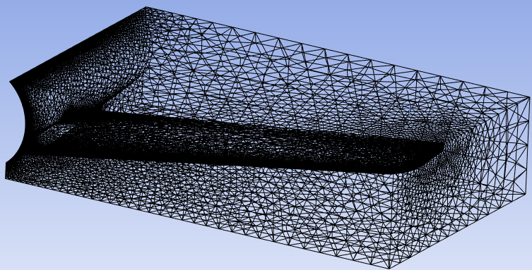

← Past projects
03 / Aerospace / Computational fluid dynamics
Wing redesign in Ansys CFD
Past projectUsed Ansys CFD to show that a 3° wing twist increased the lift coefficient by 9.6% and the drag coefficient by 5.5%.

Specifications
- Model the wing of a T-28A Trojan trainer, simulate it at cruise (85.3 m/s)
- Create four redesigns against the original to increase lift and decrease drag coefficients
Contributions
- Modelled the wing from its NACA 64A-215 root and 64(1)-212 tip aerofoils, 6.11 m semi-span.
- Created group simulation set-ups: the same mesh sizing, boundary conditions and solver for all five models. Added 5 layers inflation at the wing and around 800k mesh elements for each design.
- Designed the 3° twist redesign, created 9.6% increase in lift coefficient while adding 5.5% increase in drag coefficient.
Outcome & Lessons Learnt
- Developed an understanding on importing CAD geometry into CFD software to create a simulation with optimized meshing
- Needed to use a larger boundary area to more accurately simulate airflow
- Should have created the entire half of airplane to create a more accurate body of influence
